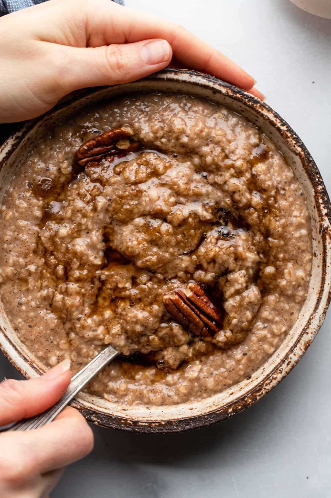

Maple an Brown Sugar Oatmeal


Maple and brown sugar oatmeal is super easy to make. I was tired of buying the packages, so I decided to experiment and this is it!
Ingredients
- 1 ½ cups water
- ¾ cup quick-cooking oats
- 1 tablespoon packed dark brown sugar
- 1 tablespoon maple syrup
Step 1
- Bring water to a boil in a small pot. Add oats and cook, stirring, for 1 minute.
Step 2
- Remove from heat and stir in brown sugar and maple syrup. Let sit until desired thickness is reached, 2 to 3 minutes.